| Name | Bheesham Kumar Sajnani |
| Roll Number | 25F-DS-020 |
| Section | 25F-DS |
| Lab Title | Database Systems — Assignment 01 |
| Subject | Database Systems |
| Instructor | Engr. Seema Bughio |
A University Information System (UIS) relies on a centralized Relational Database Management System (DBMS) to operate reliably. Instead of keeping separate files or Excel sheets across departments which cause data mismatch and duplication, the database acts as a single central source of truth. It enforces referential integrity constraints so invalid data cannot be entered, allows hundreds of students and faculty to access the system at the same time without data loss, and restricts confidential data (like exam papers and salaries) using user permissions.
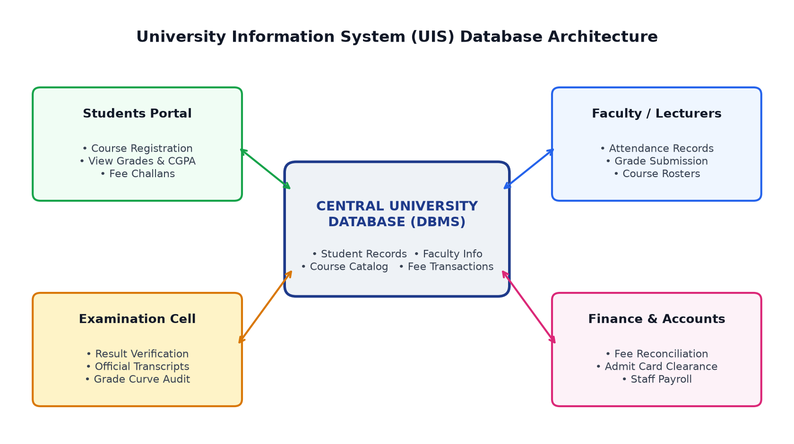
| # | Information Type | Attributes Stored |
|---|---|---|
| 1 | Student Records | Student ID, Name, Department, Enrollment Year, Courses Enrolled, Attendance, CGPA. |
| 2 | Faculty Records | Faculty ID, Name, Designation, Department, Assigned Courses, Timetable, Salary Info. |
| 3 | Course Catalog | Course Code (e.g. DS-211), Title, Credit Hours, Prerequisites, Syllabus, Allocated Lab. |
| 4 | Fee Transactions | Voucher Number, Student ID, Due Date, Tuition Amount, Payment Status (Paid/Pending), Bank ID. |
1. Authentication and Role-Based Access Control (RBAC):
Users must log in with secure credentials (passwords with salted hashing and MFA for staff). The DBMS enforces least privilege: students only get SELECT permission on their own grades via views; teachers get UPDATE/INSERT rights only on courses they teach; admin/exam staff have audited access.
Purpose: Prevents unauthorized users or students from accessing sensitive records, modifying marks, or viewing peers' private personal data.
2. Data Encryption (In-Transit and At-Rest):
Network traffic between web portals and the database is secured using TLS 1.3 / HTTPS. At the storage layer, Transparent Data Encryption (TDE with AES-256) encrypts database files and backups.
Purpose: Protects data confidentiality. Even if network packets are sniffed or a physical hard drive/backup is stolen, the data cannot be read without cryptographic keys.
3. Database Auditing, Activity Logging & Check Constraints:
An automated audit log records every grade update (User_ID, old marks, new marks, timestamp, and IP). Check constraints (e.g. 0 <= Marks <= 100) ensure only valid values are accepted.
Purpose: Guarantees accountability, non-repudiation, and traceability. If an unauthorized grade alteration is attempted, administrators can see exactly who did it and rollback the changes.
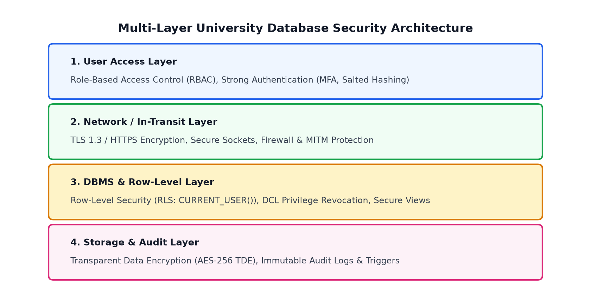
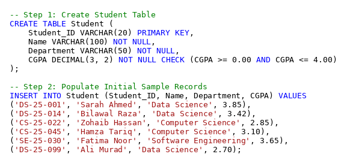
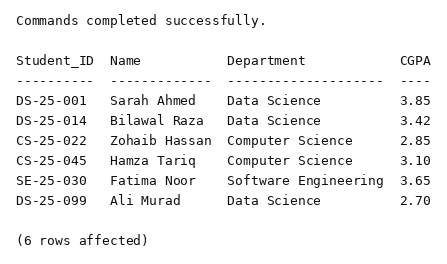
Purpose: SELECT statement with WHERE clause filtering students where CGPA strictly exceeds 3.0.
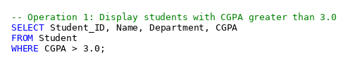
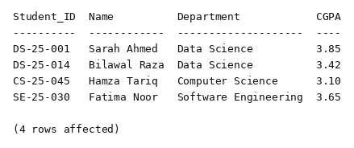
Purpose: UPDATE statement modifying the Department column for student 'CS-25-045' uniquely by primary key.
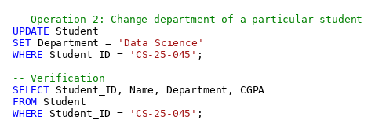
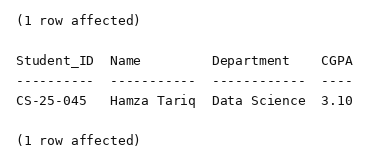
Purpose: DELETE FROM statement removing student 'DS-25-099' uniquely by primary key.
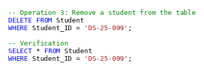
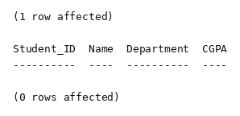
Purpose: INSERT INTO statement adding a new student record 'DS-25-102' (Ayesha Khan) into the Student table.
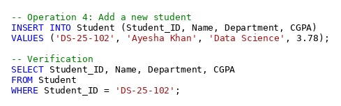
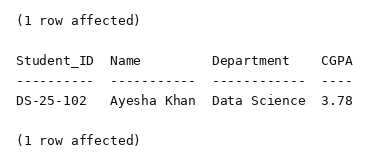
Part (a): Security Problem Identified
1. Broken Access Control & Insecure Direct Object Reference (IDOR): The system fails to check if the user requesting the record owns or has permission for it. A student is able to target another student's record and modify it.
2. Violation of Principle of Least Privilege: Regular student user accounts have UPDATE and INSERT write permissions on examination marks tables, which should only belong to faculty and the exam cell.
3. Breach of Confidentiality and Integrity: Confidentiality is violated because private marks are visible to peers; Integrity is destroyed because unauthorized users can falsify academic grades.
Part (b): Database Security Mechanism to Prevent This
1. DCL Privilege Revocation: Revoke all UPDATE, INSERT, and DELETE permissions on Examination_Marks from the Student_Role.
2. Row-Level Security (RLS): Enable RLS policies in the DBMS so students can strictly SELECT rows where Student_ID = CURRENT_USER(). Any query attempting to access or modify another student's row is blocked at the database kernel level.
3. Secure Views and Stored Procedures: Force students to query a secure view (View_Student_Own_Marks) instead of the base table, and require teachers to submit grades via validated stored procedures.
4. Audit Triggers: Create an AFTER UPDATE trigger on examination marks that automatically logs any changes to an immutable audit table with timestamps.
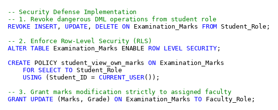
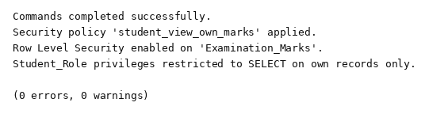